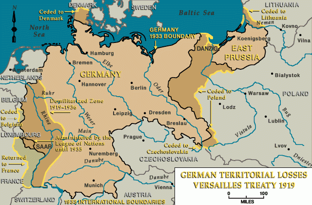
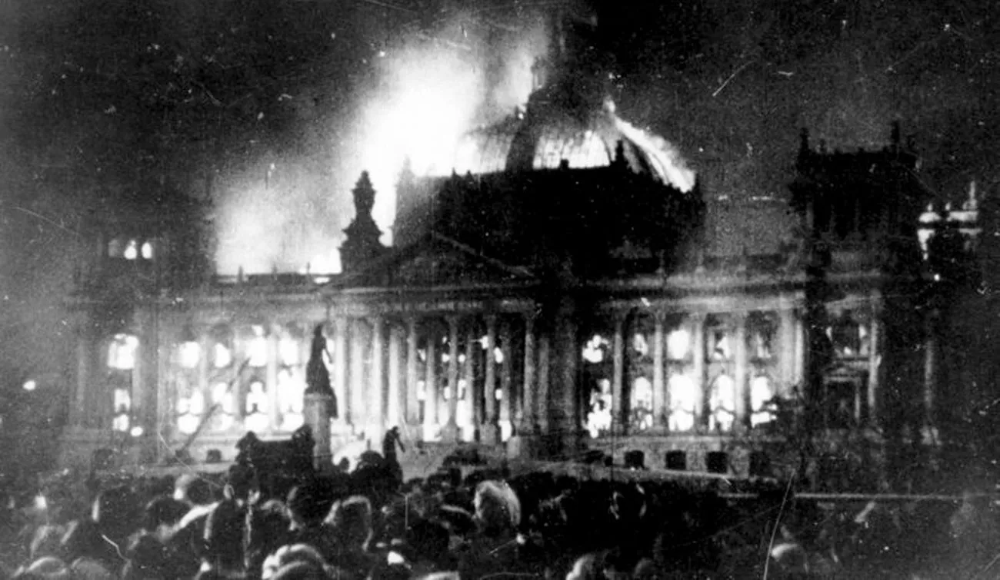
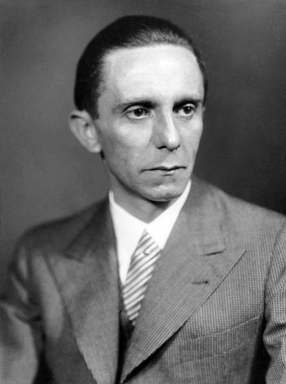
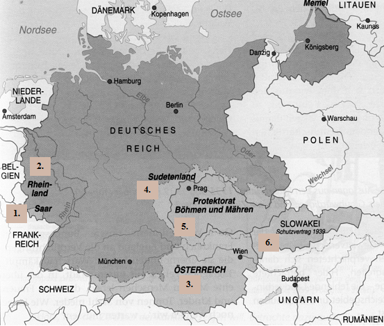

A náci Németország és Hitler hatalomra jutása
A Weimari Köztársaság és a politikai instabilitás
A Német Birodalom vereségével zárult az első világháború, és az országot a versailles-i békeszerződés súlyosan megbüntette. A béke megszorításai, például a háborús jóvátétel kifizetése, a területek elvesztése és a hadsereg létszámának drámai csökkentése, komoly gazdasági és politikai válságot idéztek elő Németországban. A háború után a Weimari Köztársaság jött létre, amely demokratikus alapokon szerveződött, de rendkívül instabil volt. A politikai rendszer sok belső ellentétet hordozott, és az országot különféle szélsőséges ideológiák, így a kommunizmus, a nacionalizmus és a fasiszta eszmék áramlása jellemezte. 
Hitler és a Nemzetiszocialista Német Munkáspárt (NSDAP)

Adolf Hitler (Führer) 1920-ban csatlakozott a Német Munkáspárthoz (a későbbi NSDAP), és gyorsan kiemelkedett a párt vezetői közül. Hitler a párt szónoklataival és retorikájával elnyerte a közönség tetszését, különösen azok körében, akik elégedetlenek voltak a versailles-i békeszerződés következményeivel és a gazdasági helyzettel. Hitler és az NSDAP ideológiája egyesítette a német nacionalizmust, az antiszemitizmust, a kommunizmus elleni harcot és a szociáldarwinizmus elveit, amelyben a "tiszta" arja fajnak kellett uralkodnia. 1923-ban Hitler próbálkozott a hatalomátvétellel a híres "sörpuccsal" (Beer Hall Putsch), de a puccs kudarccal végződött, és Hitler börtönbe került. Azonban a börtönben eltöltött idő alatt Hitler megírta híres könyvét, Mein Kampf-ot, amelyben kifejtette politikai nézeteit és jövőbeli terveit Németország számára. A könyv népszerűsége és Hitler személyes karizmája hozzájárultak ahhoz, hogy a náci párt egyre nagyobb támogatottságot nyert az évtized végére.
A hatalomra jutás útja, a Reichstag tűz és a felhatalmazási törvény
A gazdasági válság, az egyre erősödő társadalmi feszültségek és a politikai instabilitás lehetőséget adtak a nácik számára, hogy egyre nagyobb támogatottságot szerezzenek. 1932-ben Hitler és pártja már a legnagyobb politikai erővé vált Németországban, bár nem rendelkeztek abszolút többséggel. A parlamenti választásokon a náci párt 37%-os eredményt ért el, így Hitler kancellárrá való kinevezésére végül 1933. január 30-án került sor, az elnök, Paul von Hindenburg által. Hitler hatalomra jutása után azonnal elkezdte megszilárdítani hatalmát. 1933. február 27-én a Reichstag (a német parlament) épülete kigyulladt, és bár a gyújtogatás körülményei máig vitatottak, Hitler gyorsan kihasználta a helyzetet. A tűzre hivatkozva sürgette a kormányt, hogy korlátozza a polgári szabadságjogokat és vegyenek szigorú intézkedéseket a kommunista és baloldali mozgalmak ellen. Ezután Hitler elérte, hogy a Reichstag 1933. március 23-án elfogadja a Felhatalmazási Törvényt (Ermächtigungsgesetz), amely lehetővé tette, hogy Hitler rendeleti úton kormányozzon, anélkül, hogy a parlamenthez kellett volna fordulnia. Ez gyakorlatilag diktatórikus hatalmat biztosított Hitler számára, aki azonnal megkezdte a politikai ellenfelek elnyomását, a szakszervezetek felszámolását és az autoriter állam kiépítését. 
A náci ideológia és a totalitárius rendszer
A náci ideológia központjában a "faji tisztaság" és az antiszemitizmus állt. Hitler a zsidókat, a romákat, a "bolsevikokat" és más kisebbségeket felelősnek tekintett Németország problémáiért. A náci propaganda folyamatosan erősítette ezt a faji elméletet, miközben az állam hatalmas propagandagépezetet épített ki Joseph Goebbels irányításával. A nácik szinte minden aspektusát az életnek ellenőrizni kívánták, beleértve a kultúrát, a médiát, a gazdaságot és az oktatást. A Hitler által irányított Németország egy erőteljes militarizmusra épülő totális állam lett. Az állam a gazdaságot is központosította, és a Wehrmacht (német hadsereg) felkészítése érdekében hatalmas fegyverkezési programokat indítottak. Emellett a náci Németország kiterjesztette hatalmát a "Lebensraum" (élettér) elméletére alapozva, amelynek célja a német nép számára területek szerzése volt Kelet-Európában, különösen Szovjet-Oroszországban.

Joseph Goebbels
Antiszemitizmus és a holokauszt előkészületei
A náci ideológia kulcseleme volt az antiszemitizmus. A zsidókat mint az emberiség és Németország legnagyobb ellenségeit ábrázolták. Az antiszemita törvények az 1935-ös Nürembergi törvények révén váltak állami politikává, amelyek a zsidókat teljesen elválasztották a "tiszta" német társadalomtól. A "zsidók" jogait drámaian megszorították, munkájukat és magánéletüket korlátozták. A náci rendszer politikai és társadalmi programja az áldozatok tömeges elnyomását és megsemmisítését célzó rendezett gépezetet is kiépített. A koncentrációs táborok és a haláltáborok hálózata fokozatosan bővült, és 1941-től a holokauszt során mintegy 6 millió zsidót öltek meg a náci rezsim tagjai.
A külpolitikai agresszió és a háború előkészületei
Miután Hitler megszilárdította hatalmát és elkezdte megvalósítani belső terveit, egyre agresszívebb külpolitikát folytatott. Az első lépés a rearmament (újra felfegyverkezés) volt, amelyet a versailles-i békeszerződés megsértésének tekintettek. Hitler célja a területek megszerzése volt, hogy biztosítsa Németország számára a szükséges "élettér"-et. Az anschluss (Ausztria bekebelezése) és a müncheni konferencián a csehszlovákiai Szudéta-vidék bekebelezése után (később egész Csehországot megszállta, Szlovákiából bábállamot csinált) 1939 szeptemberében a lengyel invázióval elkezdődött a második világháború. 